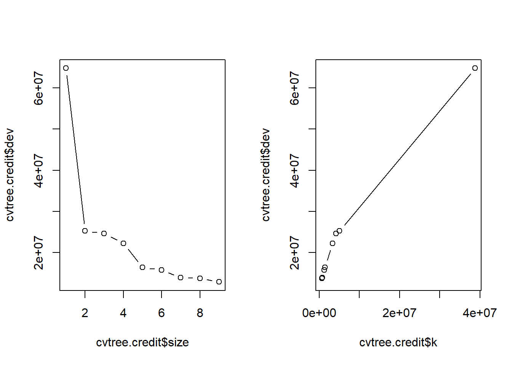
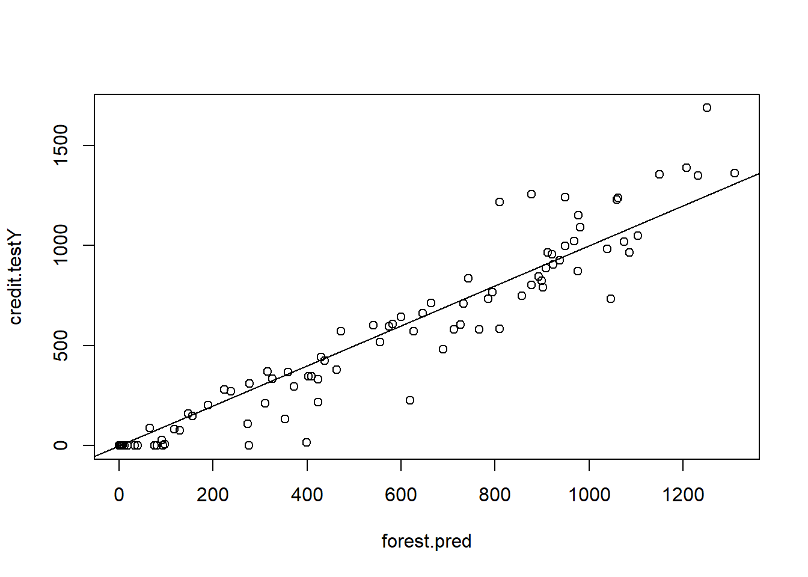

library(tidyverse)
library(glmnet)
library(tree)
library(rpart)
library(rpart.plot)
library(randomForest)
# read in csv
credit.base <- read.csv("seminar-material/Credit.csv",header=TRUE, stringsAsFactors=TRUE)Seminar 2
Overview
The goal of seminar 2 is to review the questions in Problem Set 1. Many of these questions do no require R and a selection will be discussed in person during class. Here, you will find an initial attempt at Q11.
Question 11: Try repeating exercises with another dataset available here: https://www.statlearning.com/resources-second-edition.
For this exercise, I have chosen to use the file Credit.csv, which includes the debt levels of 400 individuals. The exercise will be predict the credit-balance of card holders using the other information in the file.
Exercise 1 Download one of the datasets and apply each of the models below. In addition, try to improve on my code by using functions in tidyverse package. For example, look at this example that uses dplyr package to create the training and testing data.
Load packages and data
Create training and testing database
The outcome of interest is “Balance”, which appears as the last variable in the data.
set.seed(1)
train <- sample(1:nrow(credit.base), 3*nrow(credit.base)/4)
# Create training data
credit.train <- credit.base[train,]
credit.trainX <- credit.train[,-ncol(credit.train)]
credit.trainY <- credit.train[,ncol(credit.train)]
# Create testing data
credit.test <- credit.base[-train,]
credit.testX <- credit.test[,-ncol(credit.train)]
credit.testY <- credit.test[,ncol(credit.train)]Linear regression
lm.credit <- lm(Balance ~ ., data = credit.train)
summary(lm.credit)
Call:
lm(formula = Balance ~ ., data = credit.train)
Residuals:
Min 1Q Median 3Q Max
-142.12 -72.93 -15.53 49.04 328.78
Coefficients:
Estimate Std. Error t value Pr(>|t|)
(Intercept) -484.8236 39.9566 -12.134 < 2e-16 ***
Income -7.7615 0.2725 -28.484 < 2e-16 ***
Limit 0.2426 0.0364 6.664 1.36e-10 ***
Rating 0.4109 0.5474 0.751 0.4534
Cards 22.4444 4.8474 4.630 5.53e-06 ***
Age -0.7274 0.3317 -2.193 0.0291 *
Education 0.0567 1.7870 0.032 0.9747
OwnYes -19.3752 11.0876 -1.747 0.0816 .
StudentYes 417.2180 17.9747 23.211 < 2e-16 ***
MarriedYes -4.2692 11.7505 -0.363 0.7166
RegionSouth -0.8237 13.7553 -0.060 0.9523
RegionWest 15.5498 16.2218 0.959 0.3386
---
Signif. codes: 0 '***' 0.001 '**' 0.01 '*' 0.05 '.' 0.1 ' ' 1
Residual standard error: 95.65 on 288 degrees of freedom
Multiple R-squared: 0.9589, Adjusted R-squared: 0.9574
F-statistic: 611.2 on 11 and 288 DF, p-value: < 2.2e-16Compute the predicted values and MSE
lm.pred <- predict(lm.credit, newdata = credit.testX)
plot(lm.pred , credit.testY)
abline(0, 1)MSE.lm <- mean((lm.pred - credit.testY)^2)
Non-linear models
For discrete outcomes, see probit/logit models: https://www.geeksforgeeks.org/logistic-regression-in-r-programming/?ref=header_outind. And for categorical variables, see multinomial logit models: https://www.geeksforgeeks.org/multinomial-logistic-regression-in-r/. This resource uses the vglm function.
Ridge regression
The dataset contains factor variables: these have numerical values with labels attached (e.g. “Yes”,“No”). When using a function like lm() it will convert this two a set of dummy variables.
Matrices with factor variables
The glmnet function wants you to input a Y and X matrix. I had trouble using the as.matrix() function with the factor variables. As a solution (courtesy of ChatGPT), I first convert the X’s into a matrix where the factor variable appear as dummy variables.
credit.trainX.mat <- model.matrix(~ ., data = credit.trainX)[, -1]
credit.testX.mat <- model.matrix(~ ., data = credit.testX)[, -1]The as.matrix function works fine for the outcome variable. We can now estimate the model.
ridge.credit <- glmnet(credit.trainX.mat, as.matrix(credit.trainY), alpha=0, lamnda=3, thresh = 1e-12)
#coef(ridge.credit)Adding cross-validation
cv.out <- cv.glmnet(credit.trainX.mat,as.matrix(credit.trainY), alpha=0, nfold=3)
plot(cv.out)lambda.ridge.cv <- cv.out$lambda.minRe-estimate using cross-validated lambda
ridge.credit <- glmnet(credit.trainX.mat, as.matrix(credit.trainY), alpha=0, lamnda=lambda.ridge.cv, thresh = 1e-12)Fit the model in the test data
ridge.pred <- predict(ridge.credit, s = lambda.ridge.cv, newx = credit.testX.mat)
plot(ridge.pred , credit.testY)
abline(0, 1)MSE.ridge <- mean((ridge.pred - credit.testY)^2)LASSO
Repeat the above steps with cross-validation, but setting alpha=1.
cv.out <- cv.glmnet(credit.trainX.mat,as.matrix(credit.trainY), alpha=1, nfold=3)
plot(cv.out)lambda.LASSO.cv <- cv.out$lambda.minRe-estimate using cross-validated lambda
LASSO.credit <- glmnet(credit.trainX.mat, as.matrix(credit.trainY), alpha=0, lamnda=lambda.LASSO.cv, thresh = 1e-12)Fit the model in the test data
LASSO.pred <- predict(LASSO.credit, s = lambda.LASSO.cv, newx = credit.testX.mat)
plot(LASSO.pred , credit.testY)
abline(0, 1)MSE.LASSO <- mean((LASSO.pred - credit.testY)^2)Regression Trees
I first tried following the coded examples in James et al. (2023) Chapter 8. However, the pruning process was not clear. Next, I followed the advice of https://www.geeksforgeeks.org/how-to-prune-a-tree-in-r/ using the rpart package.
Version 1
Here is the first version using the tree package.
tree.credit <- tree(Balance ~ ., data = credit.train)
summary(tree.credit)
Regression tree:
tree(formula = Balance ~ ., data = credit.train)
Variables actually used in tree construction:
[1] "Rating" "Income" "Student" "Limit"
Number of terminal nodes: 9
Residual mean deviance: 29060 = 8457000 / 291
Distribution of residuals:
Min. 1st Qu. Median Mean 3rd Qu. Max.
-672.40 -70.32 -18.64 0.00 107.60 484.60 tree.creditnode), split, n, deviance, yval
* denotes terminal node
1) root 300 64150000 528.70
2) Rating < 353.5 163 8879000 199.10
4) Rating < 278.5 99 1377000 70.32 *
5) Rating > 278.5 64 3320000 398.30
10) Income < 45.049 51 1828000 473.70
20) Student: No 45 902100 427.10 *
21) Student: Yes 6 93940 823.50 *
11) Income > 45.049 13 63310 102.30 *
3) Rating > 353.5 137 16500000 920.80
6) Rating < 717.5 126 10880000 863.90
12) Limit < 5353 39 1253000 618.90
24) Income < 48.3975 27 424300 708.00 *
25) Income > 48.3975 12 132600 418.50 *
13) Limit > 5353 87 6239000 973.80
26) Student: No 74 4220000 922.40 *
27) Student: Yes 13 709200 1266.00 *
7) Rating > 717.5 11 534000 1573.00 *Plot the tree
plot(tree.credit)
text(tree.credit , pretty = 1)Compute the predicted values and MSE:
tree.pred <- predict(tree.credit, newdata = credit.test)
plot(tree.pred , credit.testY)
abline(0, 1)
MSE.tree <- mean((tree.pred - credit.testY)^2)Pruned tree (following example on P.355):
set.seed(789)
cvtree.credit <- cv.tree(tree.credit, FUN = prune.tree)
names(cvtree.credit)[1] "size" "dev" "k" "method"cvtree.credit$size
[1] 9 8 7 6 5 4 3 2 1
$dev
[1] 12853234 13736173 13923420 15697812 16415511 22200274 24575504 25292336
[9] 64799501
$k
[1] -Inf 696091.6 831927.0 1309232.5 1429088.0 3391459.1 4180845.0
[8] 5079908.9 38774711.8
$method
[1] "deviance"
attr(,"class")
[1] "prune" "tree.sequence"par(mfrow = c(1, 2))
plot(cvtree.credit$size , cvtree.credit$dev, type = "b")
plot(cvtree.credit$k, cvtree.credit$dev, type = "b")
Prune the tree, predict and compute MSE, and plot new tree
prune.credit <- prune.tree(tree.credit , best = 8)
plot(prune.credit)
text(prune.credit , pretty = 1)
Compute predicted values
prune.pred <- predict(prune.credit, newdata = credit.test)
plot(prune.pred , credit.testY)
abline(0, 1)MSE.prune <- mean((prune.pred - credit.testY)^2)Version 2
Next, using the rpart package. I get the following:
tree.credit2 <- rpart(Balance ~ ., data = credit.train, method = "anova")
summary(tree.credit2)Call:
rpart(formula = Balance ~ ., data = credit.train, method = "anova")
n= 300
CP nsplit rel error xerror xstd
1 0.60443234 0 1.0000000 1.0073204 0.07254634
2 0.07918721 1 0.3955677 0.4664061 0.04213623
3 0.06517232 2 0.3163805 0.3434325 0.03249794
4 0.05286712 3 0.2512081 0.3167628 0.03079975
5 0.02227707 4 0.1983410 0.2465855 0.02432872
6 0.02040873 5 0.1760639 0.2455674 0.02409388
7 0.01200212 6 0.1556552 0.2378676 0.02362119
8 0.01085089 8 0.1316510 0.2156099 0.02410439
9 0.01000000 9 0.1208001 0.2123373 0.02369780
Variable importance
Rating Limit Income Age Education Cards Student
39 37 18 3 1 1 1
Node number 1: 300 observations, complexity param=0.6044323
mean=528.6867, MSE=213835.4
left son=2 (163 obs) right son=3 (137 obs)
Primary splits:
Rating < 353.5 to the left, improve=0.60443230, (0 missing)
Limit < 4421 to the left, improve=0.60178010, (0 missing)
Income < 58.566 to the left, improve=0.20501110, (0 missing)
Student splits as LR, improve=0.04117036, (0 missing)
Age < 58.5 to the right, improve=0.01333096, (0 missing)
Surrogate splits:
Limit < 4765.5 to the left, agree=0.980, adj=0.956, (0 split)
Income < 45.5635 to the left, agree=0.747, adj=0.445, (0 split)
Age < 79.5 to the left, agree=0.583, adj=0.088, (0 split)
Cards < 1.5 to the right, agree=0.553, adj=0.022, (0 split)
Education < 7.5 to the right, agree=0.553, adj=0.022, (0 split)
Node number 2: 163 observations, complexity param=0.06517232
mean=199.092, MSE=54470.16
left son=4 (99 obs) right son=5 (64 obs)
Primary splits:
Rating < 278.5 to the left, improve=0.47088820, (0 missing)
Limit < 3570.5 to the left, improve=0.46202030, (0 missing)
Student splits as LR, improve=0.12815030, (0 missing)
Income < 15.0005 to the right, improve=0.05136852, (0 missing)
Age < 31.5 to the right, improve=0.03893959, (0 missing)
Surrogate splits:
Limit < 3429 to the left, agree=0.945, adj=0.859, (0 split)
Income < 39.1305 to the left, agree=0.687, adj=0.203, (0 split)
Age < 31.5 to the right, agree=0.626, adj=0.047, (0 split)
Cards < 5.5 to the left, agree=0.620, adj=0.031, (0 split)
Education < 9.5 to the right, agree=0.620, adj=0.031, (0 split)
Node number 3: 137 observations, complexity param=0.07918721
mean=920.8321, MSE=120418.1
left son=6 (126 obs) right son=7 (11 obs)
Primary splits:
Rating < 717.5 to the left, improve=0.30792410, (0 missing)
Limit < 8922.5 to the left, improve=0.30596580, (0 missing)
Income < 134.6495 to the left, improve=0.12713150, (0 missing)
Student splits as LR, improve=0.09558537, (0 missing)
Education < 13.5 to the left, improve=0.03174229, (0 missing)
Surrogate splits:
Limit < 9956 to the left, agree=0.993, adj=0.909, (0 split)
Income < 150.807 to the left, agree=0.956, adj=0.455, (0 split)
Cards < 6.5 to the left, agree=0.927, adj=0.091, (0 split)
Age < 85.5 to the left, agree=0.927, adj=0.091, (0 split)
Node number 4: 99 observations
mean=70.32323, MSE=13913.81
Node number 5: 64 observations, complexity param=0.02227707
mean=398.2812, MSE=51880.05
left son=10 (13 obs) right son=11 (51 obs)
Primary splits:
Income < 45.049 to the right, improve=0.43040630, (0 missing)
Limit < 4421 to the left, improve=0.12565140, (0 missing)
Age < 72.5 to the right, improve=0.09399284, (0 missing)
Rating < 327.5 to the left, improve=0.05022884, (0 missing)
Cards < 3.5 to the left, improve=0.04388043, (0 missing)
Surrogate splits:
Age < 79.5 to the right, agree=0.859, adj=0.308, (0 split)
Node number 6: 126 observations, complexity param=0.05286712
mean=863.9365, MSE=86375.81
left son=12 (39 obs) right son=13 (87 obs)
Primary splits:
Limit < 5353 to the left, improve=0.31161900, (0 missing)
Rating < 406.5 to the left, improve=0.25619670, (0 missing)
Student splits as LR, improve=0.20599790, (0 missing)
Education < 8.5 to the left, improve=0.06908941, (0 missing)
Age < 70 to the right, improve=0.02733715, (0 missing)
Surrogate splits:
Rating < 403.5 to the left, agree=0.944, adj=0.821, (0 split)
Education < 18.5 to the right, agree=0.722, adj=0.103, (0 split)
Income < 20.1615 to the left, agree=0.706, adj=0.051, (0 split)
Node number 7: 11 observations
mean=1572.545, MSE=48546.98
Node number 10: 13 observations
mean=102.3077, MSE=4870.213
Node number 11: 51 observations
mean=473.7255, MSE=35841.61
Node number 12: 39 observations, complexity param=0.01085089
mean=618.8974, MSE=32128.55
left son=24 (12 obs) right son=25 (27 obs)
Primary splits:
Income < 48.3975 to the right, improve=0.55553400, (0 missing)
Education < 10.5 to the left, improve=0.18867870, (0 missing)
Age < 70 to the right, improve=0.10403420, (0 missing)
Limit < 4942 to the right, improve=0.08655423, (0 missing)
Region splits as RLL, improve=0.07476262, (0 missing)
Surrogate splits:
Limit < 5291.5 to the right, agree=0.769, adj=0.250, (0 split)
Education < 9.5 to the left, agree=0.769, adj=0.250, (0 split)
Rating < 388 to the right, agree=0.744, adj=0.167, (0 split)
Age < 70 to the right, agree=0.718, adj=0.083, (0 split)
Node number 13: 87 observations, complexity param=0.02040873
mean=973.7816, MSE=71711.25
left son=26 (74 obs) right son=27 (13 obs)
Primary splits:
Student splits as LR, improve=0.20985060, (0 missing)
Income < 72.5045 to the right, improve=0.13136250, (0 missing)
Education < 13.5 to the left, improve=0.07140088, (0 missing)
Age < 70 to the right, improve=0.06687376, (0 missing)
Limit < 7854.5 to the left, improve=0.06149053, (0 missing)
Surrogate splits:
Rating < 385.5 to the right, agree=0.874, adj=0.154, (0 split)
Limit < 5386 to the right, agree=0.862, adj=0.077, (0 split)
Node number 24: 12 observations
mean=418.5, MSE=11049.92
Node number 25: 27 observations
mean=707.963, MSE=15715.67
Node number 26: 74 observations, complexity param=0.01200212
mean=922.3649, MSE=57033.69
left son=52 (60 obs) right son=53 (14 obs)
Primary splits:
Limit < 7854.5 to the left, improve=0.14294230, (0 missing)
Income < 83.9085 to the right, improve=0.14144100, (0 missing)
Education < 13.5 to the left, improve=0.11730300, (0 missing)
Rating < 563.5 to the left, improve=0.11369130, (0 missing)
Age < 81.5 to the right, improve=0.08734887, (0 missing)
Surrogate splits:
Rating < 563.5 to the left, agree=0.986, adj=0.929, (0 split)
Income < 128.3545 to the left, agree=0.865, adj=0.286, (0 split)
Node number 27: 13 observations
mean=1266.462, MSE=54550.25
Node number 52: 60 observations, complexity param=0.01200212
mean=878.75, MSE=41006.69
left son=104 (9 obs) right son=105 (51 obs)
Primary splits:
Income < 86.474 to the right, improve=0.38066960, (0 missing)
Rating < 457 to the left, improve=0.03416397, (0 missing)
Education < 13.5 to the left, improve=0.03168693, (0 missing)
Limit < 6131 to the left, improve=0.03136799, (0 missing)
Cards < 3.5 to the left, improve=0.02967154, (0 missing)
Surrogate splits:
Limit < 7565.5 to the right, agree=0.917, adj=0.444, (0 split)
Rating < 548 to the right, agree=0.883, adj=0.222, (0 split)
Node number 53: 14 observations
mean=1109.286, MSE=82628.92
Node number 104: 9 observations
mean=581.3333, MSE=41310.44
Node number 105: 51 observations
mean=931.2353, MSE=22588.38 tree.credit2n= 300
node), split, n, deviance, yval
* denotes terminal node
1) root 300 64150620.00 528.68670
2) Rating< 353.5 163 8878636.00 199.09200
4) Rating< 278.5 99 1377468.00 70.32323 *
5) Rating>=278.5 64 3320323.00 398.28120
10) Income>=45.049 13 63312.77 102.30770 *
11) Income< 45.049 51 1827922.00 473.72550 *
3) Rating>=353.5 137 16497280.00 920.83210
6) Rating< 717.5 126 10883350.00 863.93650
12) Limit< 5353 39 1253014.00 618.89740
24) Income>=48.3975 12 132599.00 418.50000 *
25) Income< 48.3975 27 424323.00 707.96300 *
13) Limit>=5353 87 6238879.00 973.78160
26) Student=No 74 4220493.00 922.36490
52) Limit< 7854.5 60 2460401.00 878.75000
104) Income>=86.474 9 371794.00 581.33330 *
105) Income< 86.474 51 1152007.00 931.23530 *
53) Limit>=7854.5 14 1156805.00 1109.28600 *
27) Student=Yes 13 709153.20 1266.46200 *
7) Rating>=717.5 11 534016.70 1572.54500 *This package makes nicer plots:
rpart.plot(tree.credit2)
Compute predicted values and MSE:
tree.pred2 <- predict(tree.credit2, newdata = credit.test)
plot(tree.pred2 , credit.testY)
abline(0, 1)MSE.tree2 <- mean((tree.pred2 - credit.testY)^2)Plot the cost-complexity parameter of the tree
plotcp(tree.credit2)Use cross-validation to pick the optimal cp parameter:
# Get the optimal cp value
optimal.cp <- tree.credit2$cptable[which.min(tree.credit2$cptable[,"xerror"]), "CP"]
# Prune the tree
prune.credit2 <- prune(tree.credit2, cp = optimal.cp)
# Plot the pruned tree
rpart.plot(prune.credit2)Compute predicted values and MSE for pruned tree:
prune.pred2 <- predict(prune.credit2, newdata = credit.test)
plot(prune.pred2 , credit.testY)
abline(0, 1)MSE.prune2 <- mean((prune.pred2 - credit.testY)^2)Bagging
You can implement Bagging using the randomForest code (see p. 357). The function ipred is also suggested in the notes. All you need to do is ensure that you always predict on all regressors. In this example, there are 10 regressors.
set.seed(8)
bag.credit <- randomForest(Balance ~ . , data= credit.train,mtry = 10, importance = TRUE)
bag.credit
Call:
randomForest(formula = Balance ~ ., data = credit.train, mtry = 10, importance = TRUE)
Type of random forest: regression
Number of trees: 500
No. of variables tried at each split: 10
Mean of squared residuals: 14245.24
% Var explained: 93.34bag.pred <- predict(bag.credit , newdata = credit.test)
plot(bag.pred , credit.testY)
abline(0, 1)MSE.bag <- mean((bag.pred - credit.testY)^2)Random Forest
You can implement Random Forest using the same code. All you need to do is ensure that you reduce the number of regressors selected each time.
set.seed(9)
forest.credit <- randomForest(Balance ~ . , data= credit.train,mtry = 5, importance = TRUE)
forest.pred <- predict(forest.credit, newdata = credit.test)
plot(forest.pred , credit.testY)
abline(0, 1)
MSE.forest <- mean((forest.pred - credit.testY)^2)We can view the importance of each variable (see p.359):
importance(forest.credit) %IncMSE IncNodePurity
Income 42.3912507 6330962.3
Limit 34.6335482 27443953.1
Rating 30.0028867 24137311.4
Cards 1.5694270 416814.6
Age 3.5262315 1269395.6
Education 2.5241391 713138.2
Own -0.4445780 112842.9
Student 43.3139207 2529273.1
Married -0.4083316 152515.5
Region 0.4913264 297770.1varImpPlot(forest.credit)Comparison
MSE <- c(LM = MSE.lm, Ridge = MSE.ridge, LASSO = MSE.LASSO, Tree = MSE.tree, PrunedTree = MSE.prune, Tree2 = MSE.tree2, PrunedTree2 = MSE.prune2, Bag = MSE.bag, Forest = MSE.forest)
t(t(MSE)) [,1]
LM 12361.96
Ridge 15751.42
LASSO 15751.42
Tree 39324.74
PrunedTree 49255.46
Tree2 34343.51
PrunedTree2 34343.51
Bag 12386.55
Forest 17411.44